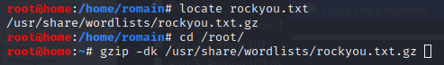
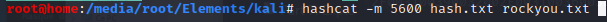
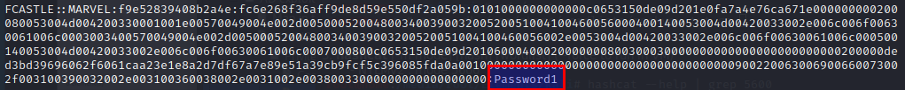

hashcat : password recovery tool, cracks hashes
1. Store the hash in a txt file :

2. Unzip rockyou.txt wordlist

3. hashcat [-m mode] [hash] [wordlist] (--force to run in VM)
- NTLMv2 : mode 5600

- - hashcat -m 5600 hash.txt rockyou.txt
- 

=> CRACKED !
- Alternative wordlist : realuniq.txt
- Alternative to hashcat : john the ripper